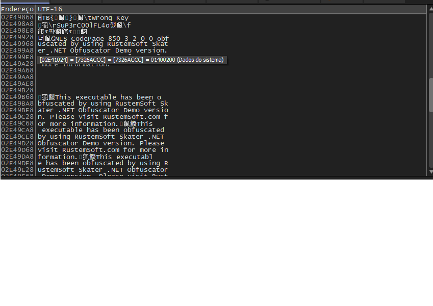

Engenharia Reversa
COMPUTER_ARCHITECTURE_MEMORY_ASSEMBLY_AND_DEBUGGERS_1SM_2026
Alvo
Bypass.exe (HTB)
Debugger
x32dbg
Flag Timestamp
17:26
Prova Visual do Dump de Memória

Captura de tela demonstrando os registradores EAX/EDX contendo a flag em texto claro durante a execução.
Resumo do Processo Técnico
01
Triagem (DIE)
Identificação de binário 32-bit em .NET Framework 4.5.2.
02
Lógica (dnSpy)
Análise de descompilação: identificada criptografia Rijndael (AES).
03
Debug (x32dbg)
Inspeção de memória e breakpoints em String.Equality.
04
Extração
Captura da flag em texto claro diretamente dos registradores EAX/EDX.